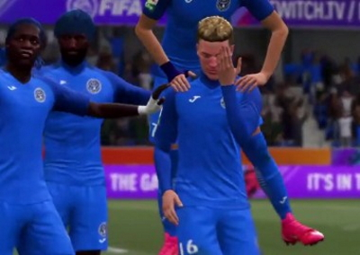
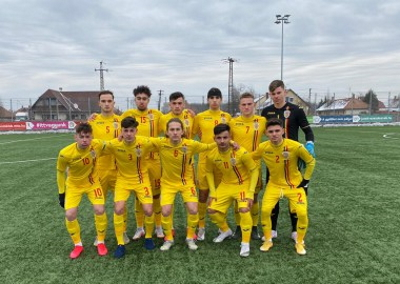
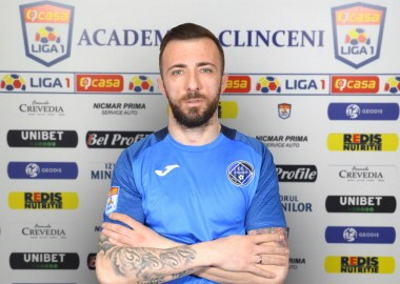
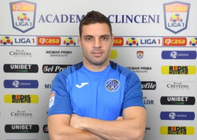

Stiri
Club
Jucatori
Staff tehnic
Clasament
Acreditari presa
Administrare acreditari
Echipe
Prima echipa
Verifica bilet
Joc: Gooool!
Joc: Ghiceste numarul
Joc: Q&A!
Istorie
Galerie
Statica
Animatie

MARTIE 18, 2021
VICTORIE ÎMPOTRIVA CAMPIOANEI ÎN VPL ROMÂNIA
Academica Clinceni eSports a avut o seară excelentă în VPL România (platforma PS). În primul meci al serii, echipa noastră a învins Dinamo.
Click aici pentru mai mult...

FEBRUARIE 18, 2021
DAVID MORAR ŞI EDUARD RUSU AU EVOLUAT PENTRU ROMÂNIA U17 ÎN VICTORIA CU 2-1 ÎMPOTRIVA UNGARIEI U17
David Morar şi Eduard Rusu au făcut parte din lotul României U17 pentru partida amicală, de la Gyula, în compania Ungariei U17.
Click aici pentru mai mult...

IANUARIE 25, 2021
UN NOU ATACANT BULGAR LA ACADEMICA CLINCENI
Academica Clinceni a reușit al treilea transfer în această iarnă. Lotului echipei noastre s-a alăturat Martin Toshev.
Click aici pentru mai mult...

IANUARIE 21, 2021
ADRIAN POPA VA JUCA LA ACADEMICA CLINCENI
Academica Clinceni și Adrian Popa au ajuns la o înțelegere. Astfel, mijlocașul de 32 de ani va evolua pentru echipa noastră până la finalul acestui sezon.
Click aici pentru mai mult...
Au mai ramas: